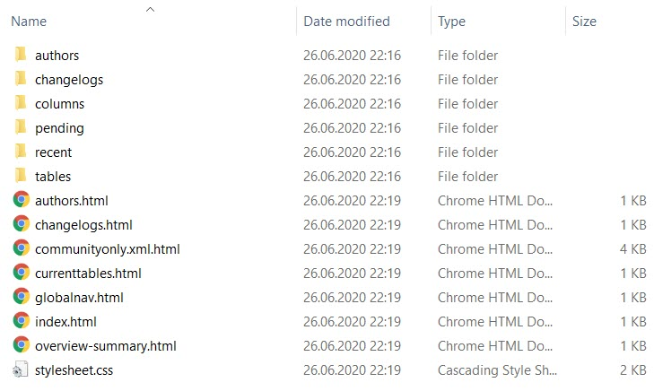

dbDoc <outputDirectory> commandThe dbDoc <outputDirectory> command generates documentation in a Javadoc format based on the existing database and
The dbDoc <outputDirectory> command is typically used to generate database documentation with the change information stored in the
The image below shows an example of the database documentation structure with the related directories and files.

dbDoc <outputDirectory> commandTo run the dbDoc <outputDirectory> command, you need to specify your driver, class path, URL, and user authentication information in your liquibase.properties file. For more information, see Creating and configuring a liquibase.properties file. You can also specify these properties in your command line.
Then run the dbDoc <outputDirectory> command:
liquibase --changeLogFile=myChangelog.xml dbDoc changelogDocsEnter the name of the myChangelog.xml and changelogDocs. Also, it is best practice to specify a new empty directory for the files path because the dbDoc <outputDirectory> command creates its own directories, the CSS file, and multiple .html files.
dbDoc <outputDirectory> global attributes| Attribute | Definition | Requirement |
|---|---|---|
|
|
The root |
Required |
|
|
The JDBC database connection URL |
Required |
|
|
The database username |
Required |
|
|
The database password |
Required |
dbDoc <outputDirectory> command attributes| Attribute | Definition | Requirement |
|---|---|---|
|
|
The directory where the database documentation is generated. |
Required |
Liquibase Pro 3.8.7 by Datical licensed to Liquibase Pro Customer until Tue Sep 22 19:00:00 CDT 2020
Liquibase command 'dbDoc' was executed successfully.